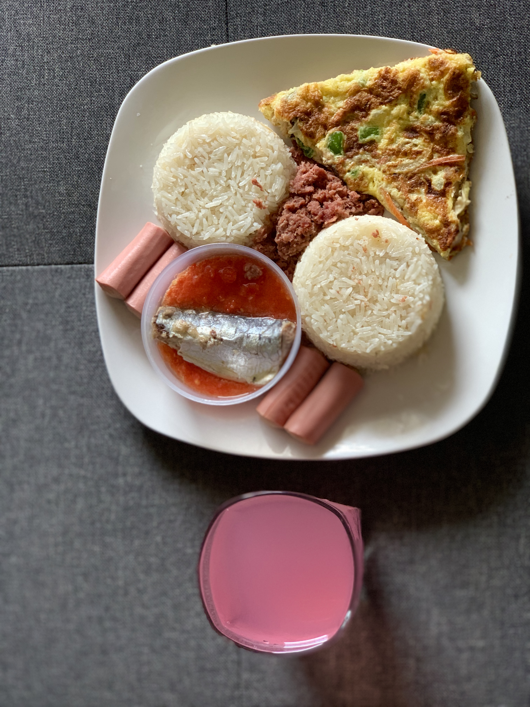

Braised Rice

Description
Braised rice, locally know as "angwamo", is a ghanaian comforting dish where rice is cooked slowly in a flavorful broth, allowing it to absorb all the delicious flavors.
It is often made with a combination of tomatoes, onions, and spices, and can be served as a main course or a side dish.
Locally, it is commonly enjoyed with fried plantains, grilled meats, fried eggs, or a simple salad.
Ingredients
- 2 cups long-grain rice
- 1/4 cup vegetable oil
- 1 onion, chopped
- 2 cloves garlic, minced
- 1 bell pepper, chopped
- 1 can (14.5 ounces) diced tomatoes
- 2 cups chicken broth
- 1 teaspoon paprika
- 1/2 teaspoon cayenne pepper (optional)
- Salt and pepper to taste
Steps
- Heat the vegetable oil in a large pot over medium heat.
- Add the onion, garlic, and bell pepper, and cook until the onion is translucent.
- Stir in the diced tomatoes and chicken broth.
- Season with paprika, cayenne pepper, salt, and pepper.
- Bring the mixture to a boil, then reduce the heat and simmer for 10 minutes.
- Rinse the rice in cold water until the water runs clear.
- Add the rinsed rice to the pot and stir to combine.
- Cover and simmer for 15-20 minutes, or until the rice is tender and has absorbed most of the liquid.